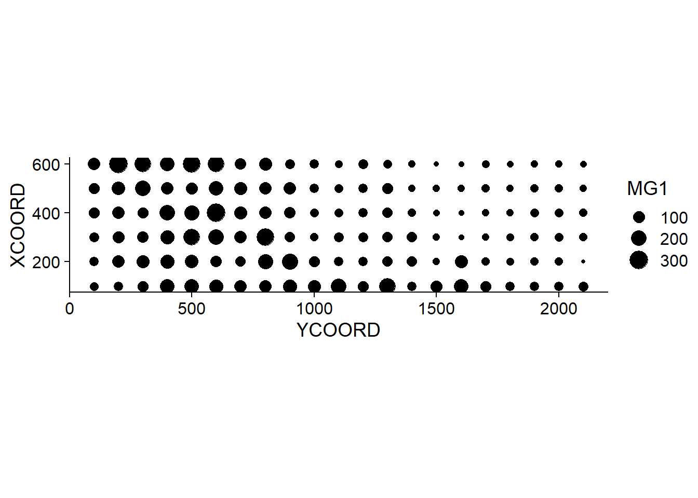
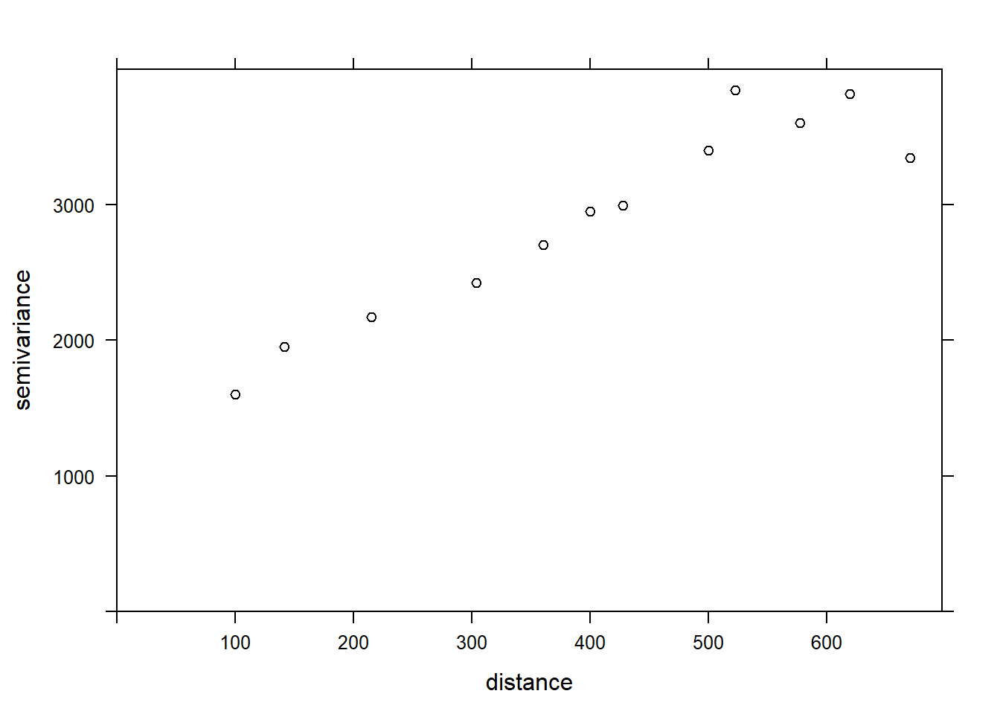

Spatial statistics in ecology, Part 2
Philippe Marchand, Université du Québec en Abitibi-Témiscamingue
January 14, 2021
Spatial correlation of a variable
Correlation between measurements of a variable taken at nearby points often occurs in environmental data. This principle is sometimes referred to as the “first law of geography” and is expressed in the following quote from Waldo Tobler: “Everything is related to everything else, but near things are more related than distant things”.
In statistics, we often refer to autocorrelation as the correlation between measurements of the same variable taken at different times (temporal autocorrelation) or places (spatial autocorrelation).
Intrinsic or induced dependence
There are two basic types of spatial dependence on a measured variable \(y\): an intrinsic dependence on \(y\), or a dependence induced by external variables influencing \(y\), which are themselves spatially correlated.
For example, suppose that the abundance of a species is correlated between two sites located near each other:
this spatial dependence can be induced if it is due to a spatial correlation of habitat factors that are favorable or unfavorable to the species;
or it can be intrinsic if it is due to the dispersion of individuals to nearby sites.
In many cases, both types of dependence affect a given variable.
If the dependence is simply induced and the external variables that cause it are included in the model explaining \(y\), then the model residuals will be independent and we can use all the methods already seen that ignore spatial correlation.
However, if the dependence is intrinsic or due to unmeasured external factors, then the spatial correlation of the residuals in the model will have to be taken into account.
Different ways to model spatial effects
In this training, we will directly model the spatial correlations of our data. It is useful to compare this approach to other ways of including spatial aspects in a statistical model.
First, we could include predictors in the model that represent position (e.g., longitude, latitude). Such predictors may be useful for detecting a systematic large-scale trend or gradient, whether or not the trend is linear (e.g., with a generalized additive model).
In contrast to this approach, the models we will see now serve to model a spatial correlation in the random fluctuations of a variable (i.e., in the residuals after removing any systematic effect).
Mixed models use random effects to represent the non-independence of data on the basis of their grouping, i.e., after accounting for systematic fixed effects, data from the same group are more similar (their residual variation is correlated) than data from different groups. These groups were sometimes defined according to spatial criteria (observations grouped into sites).
However, in the context of a random group effect, all groups are as different from each other, e.g., two sites within 100 km of each other are no more or less similar than two sites 2 km apart.
The methods we will see here and in the next parts of the training therefore allow us to model non-independence on a continuous scale (closer = more correlated) rather than just discrete (hierarchy of groups).
Geostatistical models
Geostatistics refers to a group of techniques that originated in the earth sciences. Geostatistics is concerned with variables that are continuously distributed in space and where a number of points are sampled to estimate this distribution. A classic example of these techniques comes from the mining field, where the aim was to create a map of the concentration of ore at a site from samples taken at different points on the site.
For these models, we will assume that \(z(x, y)\) is a stationary spatial variable measured at points with coordinates \(x\) and \(y\).
Variogram
A central aspect of geostatistics is the estimation of the variogram \(\gamma_z\) . The variogram is equal to half the mean square difference between the values of \(z\) for two points \((x_i, y_i)\) and \((x_j, y_j)\) separated by a distance \(h\).
\[\gamma_z(h) = \frac{1}{2} \text{E} \left[ \left( z(x_i, y_i) - z(x_j, y_j) \right)^2 \right]_{d_{ij} = h}\]
In this equation, the \(\text{E}\) function with the index \(d_{ij}=h\) designates the statistical expectation (i.e., the mean) of the squared deviation between the values of \(z\) for points separated by a distance \(h\).
If we want instead to express the autocorrelation \(\rho_z(h)\) between measures of \(z\) separated by a distance \(h\), it is related to the variogram by the equation:
\[\gamma_z = \sigma_z^2(1 - \rho_z)\] ,
where \(\sigma_z^2\) is the global variance of \(z\).
Note that \(\gamma_z = \sigma_z^2\) when we reach a distance where the measurements of \(z\) are independent, so \(\rho_z = 0\). In this case, we can see that \(\gamma_z\) is similar to a variance, although it is sometimes called “semivariogram” or “semivariance” because of the 1/2 factor in the above equation.
Theoretical models for the variogram
Several parametric models have been proposed to represent the spatial correlation as a function of the distance between sampling points. Let us first consider a correlation that decreases exponentially:
\[\rho_z(h) = e^{-h/r}\]
Here, \(\rho_z = 1\) for \(h = 0\) and the correlation is multiplied by \(1/e \approx 0.37\) each time the distance increases by \(r\). In this context, \(r\) is called the range of the correlation.
From the above equation, we can calculate the corresponding variogram.
\[\gamma_z(h) = \sigma_z^2 (1 - e^{-h/r})\]
Here is a graphical representation of this variogram.
Because of the exponential function, the value of \(\gamma\) at large distances approaches the global variance \(\sigma_z^2\) without exactly reaching it. This asymptote is called a sill in the geostatistical context and is represented by the symbol \(s\).
Finally, it is sometimes unrealistic to assume a perfect correlation when the distance tends towards 0, because of a possible variation of \(z\) at a very small scale. A nugget effect, denoted \(n\), can be added to the model so that \(\gamma\) approaches \(n\) (rather than 0) if \(h\) tends towards 0. The term nugget comes from the mining origin of these techniques, where a nugget could be the source of a sudden small-scale variation in the concentration of a mineral.
By adding the nugget effect, the remainder of the variogram is “compressed” to keep the same sill, resulting in the following equation.
\[\gamma_z(h) = n + (s - n) (1 - e^{-h/r})\]
In the gstat package that we use below, the term \((s-n)\) is called a partial sill or psill for the exponential portion of the variogram.
In addition to the exponential model, two other common theoretical models for the variogram are the Gaussian model (where the correlation follows a half-normal curve), and the spherical model (where the variogram increases linearly at the start and then curves and reaches the plateau at a distance equal to its range \(r\)). The spherical model thus allows the correlation to be exactly 0 at large distances, rather than gradually approaching zero in the case of the other models.
| Model | \(\rho(h)\) | \(\gamma(h)\) |
|---|---|---|
| Exponential | \(\exp\left(-\frac{h}{r}\right)\) | \(s \left(1 - \exp\left(-\frac{h}{r}\right)\right)\) |
| Gaussian | \(\exp\left(-\frac{h^2}{r^2}\right)\) | \(s \left(1 - \exp\left(-\frac{h^2}{r^2}\right)\right)\) |
| Spherical \((h < r)\) * | \(1 - \frac{3}{2}\frac{h}{r} + \frac{1}{2}\frac{h^3}{r^3}\) | \(s \left(\frac{3}{2}\frac{h}{r} - \frac{1}{2}\frac{h^3}{r^3} \right)\) |
* For the spherical model, \(\rho = 0\) and \(\gamma = s\) if \(h \ge r\).
Empirical variogram
To estimate \(\gamma_z(h)\) from empirical data, we need to define distance classes, thus grouping different distances within a margin of \(\pm \delta\) around a distance \(h\), then calculating the mean square deviation for the pairs of points in that distance class.
\[\hat{\gamma_z}(h) = \frac{1}{2 N_{\text{paires}}} \sum \left[ \left( z(x_i, y_i) - z(x_j, y_j) \right)^2 \right]_{d_{ij} = h \pm \delta}\]
We will see in the next section how to estimate a variogram in R.
Regression model with spatial correlation
The following equation represents a multiple linear regression including residual spatial correlation:
\[v = \beta_0 + \sum_i \beta_i u_i + z + \epsilon\]
Here, \(v\) designates the response variable and \(u\) the predictors, to avoid confusion with the spatial coordinates \(x\) and \(y\).
In addition to the residual \(\epsilon\) that is independent between observations, the model includes a term \(z\) that represents the spatially correlated portion of the residual variance.
Here are suggested steps to apply this type of model:
Fit the regression model without spatial correlation.
Verify the presence of spatial correlation from the empirical variogram of the residuals.
Fit one or more regression models with spatial correlation and select the one that shows the best fit to the data.
Geostatistical models in R
The gstat package contains functions related to geostatistics. For this example, we will use the oxford dataset from this package, which contains measurements of physical and chemical properties for 126 soil samples from a site, along with their coordinates XCOORD and YCOORD.
library(gstat)
data(oxford)
str(oxford)## 'data.frame': 126 obs. of 22 variables:
## $ PROFILE : num 1 2 3 4 5 6 7 8 9 10 ...
## $ XCOORD : num 100 100 100 100 100 100 100 100 100 100 ...
## $ YCOORD : num 2100 2000 1900 1800 1700 1600 1500 1400 1300 1200 ...
## $ ELEV : num 598 597 610 615 610 595 580 590 598 588 ...
## $ PROFCLASS: Factor w/ 3 levels "Cr","Ct","Ia": 2 2 2 3 3 2 3 2 3 3 ...
## $ MAPCLASS : Factor w/ 3 levels "Cr","Ct","Ia": 2 3 3 3 3 2 2 3 3 3 ...
## $ VAL1 : num 3 3 4 4 3 3 4 4 4 3 ...
## $ CHR1 : num 3 3 3 3 3 2 2 3 3 3 ...
## $ LIME1 : num 4 4 4 4 4 0 2 1 0 4 ...
## $ VAL2 : num 4 4 5 8 8 4 8 4 8 8 ...
## $ CHR2 : num 4 4 4 2 2 4 2 4 2 2 ...
## $ LIME2 : num 4 4 4 5 5 4 5 4 5 5 ...
## $ DEPTHCM : num 61 91 46 20 20 91 30 61 38 25 ...
## $ DEP2LIME : num 20 20 20 20 20 20 20 20 40 20 ...
## $ PCLAY1 : num 15 25 20 20 18 25 25 35 35 12 ...
## $ PCLAY2 : num 10 10 20 10 10 20 10 20 10 10 ...
## $ MG1 : num 63 58 55 60 88 168 99 59 233 87 ...
## $ OM1 : num 5.7 5.6 5.8 6.2 8.4 6.4 7.1 3.8 5 9.2 ...
## $ CEC1 : num 20 22 17 23 27 27 21 14 27 20 ...
## $ PH1 : num 7.7 7.7 7.5 7.6 7.6 7 7.5 7.6 6.6 7.5 ...
## $ PHOS1 : num 13 9.2 10.5 8.8 13 9.3 10 9 15 12.6 ...
## $ POT1 : num 196 157 115 172 238 164 312 184 123 282 ...Suppose that we want to model the magnesium concentration (MG1), represented as a function of the spatial position in the following graph.
library(ggplot2)
ggplot(oxford, aes(x = YCOORD, y = XCOORD, size = MG1)) +
geom_point() +
coord_fixed()
Note that the \(x\) and \(y\) axes have been inverted to save space. The coord_fixed() function of ggplot2 ensures that the scale is the same on both axes, which is useful for representing spatial data.
We can immediately see that these measurements were taken on a 100 m grid. It seems that the magnesium concentration is spatially correlated, although it may be a correlation induced by another variable. In particular, we know that the concentration of magnesium is negatively related to the soil pH (PH1).
ggplot(oxford, aes(x = PH1, y = MG1)) +
geom_point()The variogram function of gstat is used to estimate a variogram from empirical data. Here is the result obtained for the variable MG1.
var_mg <- variogram(MG1 ~ 1, locations = ~ XCOORD + YCOORD, data = oxford)
var_mg## np dist gamma dir.hor dir.ver id
## 1 225 100.0000 1601.404 0 0 var1
## 2 200 141.4214 1950.805 0 0 var1
## 3 548 215.0773 2171.231 0 0 var1
## 4 623 303.6283 2422.245 0 0 var1
## 5 258 360.5551 2704.366 0 0 var1
## 6 144 400.0000 2948.774 0 0 var1
## 7 570 427.5569 2994.621 0 0 var1
## 8 291 500.0000 3402.058 0 0 var1
## 9 366 522.8801 3844.165 0 0 var1
## 10 200 577.1759 3603.060 0 0 var1
## 11 458 619.8400 3816.595 0 0 var1
## 12 90 670.8204 3345.739 0 0 var1The formula MG1 ~ 1 indicates that no linear predictor is included in this model, while the argument locations indicates which variables in the data frame correspond to the spatial coordinates.
In the resulting table, gamma is the value of the variogram for the distance class centered on dist, while np is the number of pairs of points in that class. Here, since the points are located on a grid, we obtain regular distance classes (e.g.: 100 m for neighboring points on the grid, 141 m for diagonal neighbors, etc.).
Here, we limit ourselves to the estimation of isotropic variograms, i.e. the variogram depends only on the distance between the two points and not on the direction. Although we do not have time to see it today, it is possible with gstat to estimate the variogram separately in different directions.
We can illustrate the variogram with plot.
plot(var_mg, col = "black")
If we want to estimate the residual spatial correlation of MG1 after including the effect of PH1, we can add that predictor to the formula.
var_mg <- variogram(MG1 ~ PH1, locations = ~ XCOORD + YCOORD, data = oxford)
plot(var_mg, col = "black")
Including the effect of pH, the range of the spatial correlation seems to decrease, while the plateau is reached around 300 m. It even seems that the variogram decreases beyond 400 m. In general, we assume that the variance between two points does not decrease with distance, unless there is a periodic spatial pattern.
The function fit.variogram accepts as arguments a variogram estimated from the data, as well as a theoretical model described in a vgm function, and then estimates the parameters of that model according to the data. The fitting is done by the method of least squares.
For example, vgm("Exp") means we want to fit an exponential model.
vfit <- fit.variogram(var_mg, vgm("Exp"))
vfit## model psill range
## 1 Nug 0.000 0.00000
## 2 Exp 1951.496 95.11235There is no nugget effect, because psill = 0 for the Nug (nugget) part of the model. The exponential part has a sill at 1951 and a range of 95 m.
To compare different models, a vector of model names can be given to vgm. In the following example, we include the exponential, gaussian (“Gau”) and spherical (“Sph”) models.
vfit <- fit.variogram(var_mg, vgm(c("Exp", "Gau", "Sph")))
vfit## model psill range
## 1 Nug 0.000 0.00000
## 2 Exp 1951.496 95.11235The function gives us the result of the model with the best fit (lowest sum of squared deviations), which here is the same exponential model.
Finally, we can superimpose the theoretical model and the empirical variogram on the same graph.
plot(var_mg, vfit, col = "black")Regression with spatial correlation
We have seen above that the gstat package allows us to estimate the variogram of the residuals of a linear model. In our example, the magnesium concentration was modeled as a function of pH, with spatially correlated residuals.
Another tool to fit this same type of model is the gls function of the nlme package, which is included with the installation of R.
This function applies the generalized least squares method to fit linear regression models when the residuals are not independent or when the residual variance is not the same for all observations. Since the estimates of the coefficients depend on the estimated correlations between the residuals and the residuals themselves depend on the coefficients, the model is fitted by an iterative algorithm:
A classical linear regression model (without correlation) is fitted to obtain residuals.
The spatial correlation model (variogram) is fitted with those residuals.
The regression coefficients are re-estimated, now taking into account the correlations.
Steps 2 and 3 are repeated until the estimates are stable at a desired precision.
Here is the application of this method to the same model for the magnesium concentration in the oxford dataset. In the correlation argument of gls, we specify an exponential correlation model as a function of our spatial coordinates and we include a possible nugget effect.
In addition to the exponential correlation corExp, the gls function can also estimate a Gaussian (corGaus) or spherical (corSpher) model.
library(nlme)##
## Attaching package: 'nlme'## The following object is masked from 'package:dplyr':
##
## collapsegls_mg <- gls(MG1 ~ PH1, oxford,
correlation = corExp(form = ~ XCOORD + YCOORD, nugget = TRUE))
summary(gls_mg)## Generalized least squares fit by REML
## Model: MG1 ~ PH1
## Data: oxford
## AIC BIC logLik
## 1278.65 1292.751 -634.325
##
## Correlation Structure: Exponential spatial correlation
## Formula: ~XCOORD + YCOORD
## Parameter estimate(s):
## range nugget
## 478.0322964 0.2944753
##
## Coefficients:
## Value Std.Error t-value p-value
## (Intercept) 391.1387 50.42343 7.757084 0
## PH1 -41.0836 6.15662 -6.673079 0
##
## Correlation:
## (Intr)
## PH1 -0.891
##
## Standardized residuals:
## Min Q1 Med Q3 Max
## -2.1846957 -0.6684520 -0.3687813 0.4627580 3.1918604
##
## Residual standard error: 53.8233
## Degrees of freedom: 126 total; 124 residualTo compare this result with the adjusted variogram above, the parameters given by gls must be transformed. The range has the same meaning in both cases and corresponds to 478 m for the result of gls. The global variance of the residuals is the square of Residual standard error. The nugget effect here (0.294) is expressed as a fraction of that variance. Finally, to obtain the partial sill of the exponential part, the nugget effect must be subtracted from the total variance.
After performing these calculations, we can give these parameters to the vgm function of gstat to superimpose this variogram estimated by gls on our variogram of the residuals of the classical linear model.
gls_range <- 478
gls_var <- 53.823^2
gls_nugget <- 0.294 * gls_var
gls_psill <- gls_var - gls_nugget
gls_vgm <- vgm("Exp", psill = gls_psill, range = gls_range, nugget = gls_nugget)
plot(var_mg, gls_vgm, col = "black", ylim = c(0, 4000))
Does the model fit the data less well here? In fact, this empirical variogram represented by the points was obtained from the residuals of the linear model ignoring the spatial correlation, so it is a biased estimate of the actual spatial correlations. The method is still adequate to quickly check if spatial correlations are present. However, to simultaneously fit the regression coefficients and the spatial correlation parameters, the generalized least squares (GLS) approach is preferable and will produce more accurate estimates.
Finally, note that the result of the gls model also gives the AIC, which we can use to compare the fit of different models (with different predictors or different forms of spatial correlation).
Exercise
The bryo_belg.csv dataset is adapted from the data of this study:
Neyens, T., Diggle, P.J., Faes, C., Beenaerts, N., Artois, T. et Giorgi, E. (2019) Mapping species richness using opportunistic samples: a case study on ground-floor bryophyte species richness in the Belgian province of Limburg. Scientific Reports 9, 19122. https://doi.org/10.1038/s41598-019-55593-x
This data frame shows the specific richness of ground bryophytes (richness) for different sampling points in the Belgian province of Limburg, with their position (x, y) in km, in addition to information on the proportion of forest (forest) and wetlands (wetland) in a 1 km^2$ cell containing the sampling point.
bryo_belg <- read.csv("data/bryo_belg.csv")
head(bryo_belg)## richness forest wetland x y
## 1 9 0.2556721 0.5036614 228.9516 220.8869
## 2 6 0.6449114 0.1172068 227.6714 219.8613
## 3 5 0.5039905 0.6327003 228.8252 220.1073
## 4 3 0.5987329 0.2432942 229.2775 218.9035
## 5 2 0.7600775 0.1163538 209.2435 215.2414
## 6 10 0.6865434 0.0000000 210.4142 216.5579For this exercise, we will use the square root of the specific richness as the response variable. The square root transformation often allows to homogenize the variance of the count data in order to apply a linear regression.
Fit a linear model of the transformed species richness to the proportion of forest and wetlands, without taking into account spatial correlations. What is the effect of the two predictors in this model?
Calculate the empirical variogram of the model residuals in (a). Does there appear to be a spatial correlation between the points?
Note: The cutoff argument to the variogram function specifies the maximum distance at which the variogram is calculated. You can manually adjust this value to get a good view of the sill.
Re-fit the linear model in (a) with the
glsfunction in the nlme package, trying different types of spatial correlations (exponential, Gaussian, spherical). Compare the models (including the one without spatial correlation) with the AIC.What is the effect of the proportion of forests and wetlands according to the model in (c)? Explain the differences between the conclusions of this model and the model in (a).
Kriging
As mentioned before, a common application of geostatistical models is to predict the value of the response variable at unsampled locations, a form of spatial interpolation called kriging (pronounced with a hard “g”).
There are three basic types of kriging based on the assumptions made about the response variable:
Ordinary kriging: Stationary variable with an unknown mean.
Simple kriging: Stationary variable with a known mean.
Universal kriging: Variable with a trend given by a linear or non-linear model.
For all kriging methods, the predictions at a new point are a weighted mean of the values at known points. These weights are chosen so that kriging provides the best linear unbiased prediction of the response variable, if the model assumptions (in particular the variogram) are correct. That is, among all possible unbiased predictions, the weights are chosen to give the minimum mean square error. Kriging also provides an estimate of the uncertainty of each prediction.
While we will not present the detailed kriging equations here, the weights depend on both the correlations (estimated by the variogram) between the sampled points and the new point, as well of the correlations between the sampled points themselves. In other words, sampled points near the new point are given more weight, but isolated sampled points are also given more weight, because sample points close to each other provide redundant information.
Kriging is an interpolation method, so the prediction at a sampled point will always be equal to the measured value (the measurement is supposed to have no error, just spatial variation). However, in the presence of a nugget effect, any small displacement from the sampled location will show variability according to the nugget.
In the example below, we generate a new dataset composed of randomly-generated (x, y) coordinates within the study area as well as randomly-generated pH values based on the oxford data. We then apply the function krige to predict the magnesium values at these new points. Note that we specify the variogram derived from the GLS results in the model argument to krige.
set.seed(14)
new_points <- data.frame(
XCOORD = runif(100, min(oxford$XCOORD), max(oxford$XCOORD)),
YCOORD = runif(100, min(oxford$YCOORD), max(oxford$YCOORD)),
PH1 = rnorm(100, mean(oxford$PH1), sd(oxford$PH1))
)
pred <- krige(MG1 ~ PH1, locations = ~ XCOORD + YCOORD, data = oxford,
newdata = new_points, model = gls_vgm)## [using universal kriging]head(pred)## XCOORD YCOORD var1.pred var1.var
## 1 227.0169 162.1185 47.13065 1269.002
## 2 418.9136 465.9013 79.68437 1427.269
## 3 578.5943 2032.7477 60.30539 1264.471
## 4 376.2734 1530.7193 127.22366 1412.875
## 5 591.5336 421.6290 105.88124 1375.485
## 6 355.7369 404.3378 127.73055 1250.114The result of krige includes the new point coordinates, the prediction of the variable var1.pred along with its estimated variance var1.var. In the graph below, we show the mean MG1 predictions from kriging (triangles) along with the measurements (circles).
pred$MG1 <- pred$var1.pred
ggplot(oxford, aes(x = YCOORD, y = XCOORD, color = MG1)) +
geom_point() +
geom_point(data = pred, shape = 17, size = 2) +
coord_fixed()The estimated mean and variance from kriging can be used to simulate possible values of the variable at each new point, conditional on the sampled values. In the example below, we performed 4 conditional simulations by adding the argument nsim = 4 to the same krige instruction.
sim_mg <- krige(MG1 ~ PH1, locations = ~ XCOORD + YCOORD, data = oxford,
newdata = new_points, model = gls_vgm, nsim = 4)## drawing 4 GLS realisations of beta...
## [using conditional Gaussian simulation]head(sim_mg)## XCOORD YCOORD sim1 sim2 sim3 sim4
## 1 227.0169 162.1185 13.22592 32.43060 42.81847 79.60594
## 2 418.9136 465.9013 67.94216 15.53717 69.25356 63.42233
## 3 578.5943 2032.7477 99.93083 77.98291 74.28468 58.98483
## 4 376.2734 1530.7193 104.86240 155.50774 85.82552 143.07373
## 5 591.5336 421.6290 78.14221 68.62827 147.33052 130.14264
## 6 355.7369 404.3378 164.46754 117.26160 131.85158 143.58951library(tidyr)
sim_mg <- pivot_longer(sim_mg, cols = c(sim1, sim2, sim3, sim4),
names_to = "sim", values_to = "MG1")
ggplot(sim_mg, aes(x = YCOORD, y = XCOORD, color = MG1)) +
geom_point() +
coord_fixed() +
facet_wrap(~ sim)Solutions
bryo_lm <- lm(sqrt(richness) ~ forest + wetland, data = bryo_belg)
summary(bryo_lm)##
## Call:
## lm(formula = sqrt(richness) ~ forest + wetland, data = bryo_belg)
##
## Residuals:
## Min 1Q Median 3Q Max
## -1.8847 -0.4622 0.0545 0.4974 2.3116
##
## Coefficients:
## Estimate Std. Error t value Pr(>|t|)
## (Intercept) 2.34159 0.08369 27.981 < 2e-16 ***
## forest 1.11883 0.13925 8.034 9.74e-15 ***
## wetland -0.59264 0.17216 -3.442 0.000635 ***
## ---
## Signif. codes: 0 '***' 0.001 '**' 0.01 '*' 0.05 '.' 0.1 ' ' 1
##
## Residual standard error: 0.7095 on 417 degrees of freedom
## Multiple R-squared: 0.2231, Adjusted R-squared: 0.2193
## F-statistic: 59.86 on 2 and 417 DF, p-value: < 2.2e-16The proportion of forest has a significant positive effect and the proportion of wetlands has a significant negative effect on bryophyte richness.
plot(variogram(sqrt(richness) ~ forest + wetland, locations = ~ x + y,
data = bryo_belg, cutoff = 50), col = "black")The variogram is increasing from 0 to at least 40 km, so there appears to be spatial correlations in the model residuals.
bryo_exp <- gls(sqrt(richness) ~ forest + wetland, data = bryo_belg,
correlation = corExp(form = ~ x + y, nugget = TRUE))
bryo_gaus <- gls(sqrt(richness) ~ forest + wetland, data = bryo_belg,
correlation = corGaus(form = ~ x + y, nugget = TRUE))
bryo_spher <- gls(sqrt(richness) ~ forest + wetland, data = bryo_belg,
correlation = corSpher(form = ~ x + y, nugget = TRUE))AIC(bryo_lm)## [1] 908.6358AIC(bryo_exp)## [1] 867.822AIC(bryo_gaus)## [1] 870.9592AIC(bryo_spher)## [1] 866.9117The spherical model has the smallest AIC.
summary(bryo_spher)## Generalized least squares fit by REML
## Model: sqrt(richness) ~ forest + wetland
## Data: bryo_belg
## AIC BIC logLik
## 866.9117 891.1102 -427.4558
##
## Correlation Structure: Spherical spatial correlation
## Formula: ~x + y
## Parameter estimate(s):
## range nugget
## 43.1725287 0.6063165
##
## Coefficients:
## Value Std.Error t-value p-value
## (Intercept) 2.0368778 0.2481637 8.207800 0.000
## forest 0.6989832 0.1481690 4.717471 0.000
## wetland -0.2441125 0.1809119 -1.349344 0.178
##
## Correlation:
## (Intr) forest
## forest -0.251
## wetland -0.235 0.241
##
## Standardized residuals:
## Min Q1 Med Q3 Max
## -1.75204008 -0.06568726 0.61415414 1.15240184 3.23322262
##
## Residual standard error: 0.7998274
## Degrees of freedom: 420 total; 417 residualBoth effects are less important in magnitude and the effect of wetlands is not significant anymore. As is the case for other types of non-independent residuals, the “effective sample size” here is less than the number of points, since points close to each other provide redundant information. Therefore, the relationship between predictors and response is less clear than given by the model assuming all these points were independent.
Note that the results for all three gls models are quite similar, so the choice to include spatial correlations was more important than the exact shape assumed for the variogram.